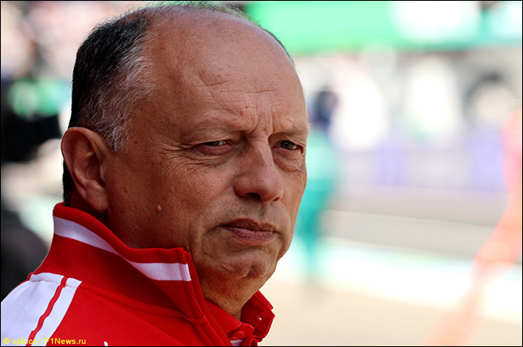
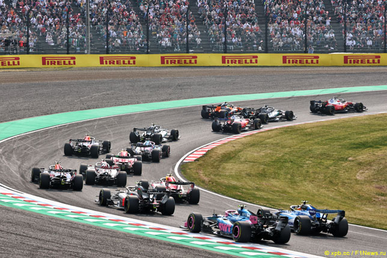
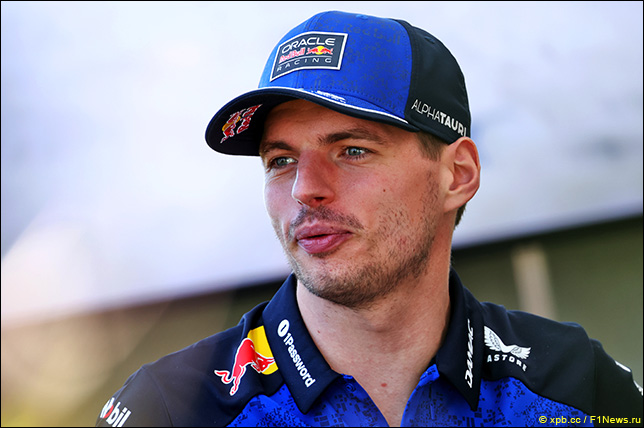
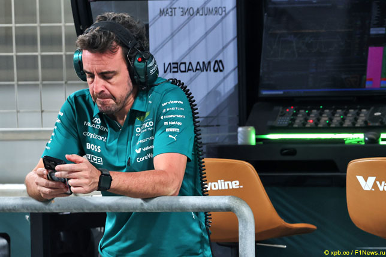
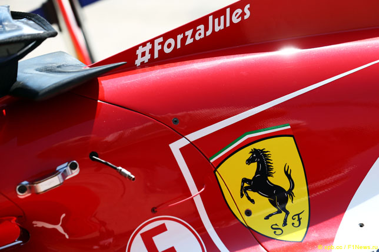
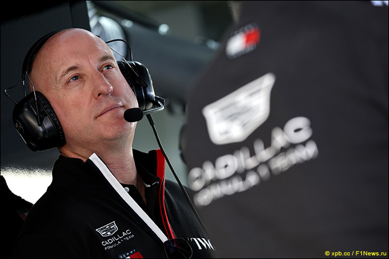

Новости

Вассёр: Наша цель в этом году – победы и подиумы!
Несмотря на некоторое отставание в первых гонках, Фредерик Вассёр считает, что Ferrari поборется за победы в этом сезоне…
Фредерик Вассёр: «Наша цель в этом году – победы и подиумы! Пока наша машина уступает Mercedes в эффективности, но в условиях ограниченной мощности это говорит лишь о том, что нам нужно работать лучше и добиваться большего. В целом, отставание не так уж велико.
Мы понимаем, что в Майами сезон по сути начнётся заново. Важно стабильно зарабатывать большое количество очков, подниматься на подиум, не отставать от Mercedes и сохранять свои шансы в чемпионате.
Сезон в этом году длинный, доработка машин идёт быстрыми темпами – расстановка сил будет меняться. Важно зарабатывать максимум возможных очков каждый уик-энд и хорошо справляться с работой по развитию машины».

Варианты изменения регламента силовых установок
Во время паузы между этапами в Японии и Майами в FIA проведут ряд встреч с командами, производителями силовых установок, гонщиками и представителями FOM, на которых будут обсуждаться изменения в регламенте 2026 года. Технический аналитик Паоло Филизетти рассуждает, какие изменения могут быть внесены в силовые установки после волны критики в начале сезона.
«В недели, предшествующие Гран При Майами, Комиссия Формулы 1 совместно с производителями силовых установок и FIA запланировала ряд встреч, чтобы обсудить текущее положение дел и проблемы, проявившиеся в первых трёх гонках, связанные с зарядкой электрической составляющей силовых установок, – пишет Филизетти. – По сути, предстоит оценить, как именно сложности с управлением энергией повлияли на борьбу на трассе. В частности, по мнению многих гонщиков и сторонних наблюдателей, сильнее всего пострадала квалификация из-за так называемого режима суперклиппинга.
Речь идёт о системе, управляемой алгоритмами программного обеспечения силовой установки – в этом режиме фактически снижается отдача мощности в пользу накопления энергии. Однако и ход борьбы в гонках оказывается под серьёзным влиянием этого процесса, что наглядно продемонстрировал инцидент с участием Оливера Бермана и Франко Колапинто, когда разница в режимах работы силовых установок привела к резкому сближению на высокой скорости и очевидно опасной ситуации.
Существует немало способов сделать происходящее на трассе менее искусственным и одновременно снизить риски, вызванные значительной разницей в скорости между машинами. Например, когда одна силовая установка работает в режиме заряда батареи, а другая – в режиме использования накопленной энергии.

Ферстаппен сможет объявить об уходе не раньше октября
Макс Ферстаппен и его отец уже не раз в этом сезоне говорили о потере мотивации. Оставшись без быстрой машины, голландский гонщик понимает, что быстро решить очевидные проблемы не удастся, и использует возможность заявить о своей позиции по поводу нового регламента, угрожая уходом из Формулы 1.
Ферстаппен связан контрактом с Red Bull до конца 2028 года, но в нём есть пункт о досрочном расторжении, который позволяет ему уйти из команды в зависимости от ее конкурентоспособности.
По информации The Race, в прошлом году Ферстаппен мог уйти из команды, если к началу летнего перерыва оказывался за пределами первой тройки в личном зачёте. В 2026 году этот пункт стал более строгим: если к определенному моменту Ферстаппен не окажется в числе двух лучших гонщиков, то может уйти.
Кроме того, по контракту Ферстаппен может сообщить Red Bull о своем решении не раньше октября, что даёт ему достаточно времени, чтобы оценить прогресс команды и конкурентоспособность соперников.

Фернандо Алонсо: Нам просто нужно время
Фернандо Алонсо надеется на серьёзный прогресс команды во второй половине сезона…
Фернандо Алонсо: «Польза уже в том, что из-за отмены этапов в Бахрейне и Джидде мы не будем в этих гонках последними. Этот перерыв не позволит добиться прогресса в работе с машиной – мы и так каждый день делаем для этого всё возможное, но я надеюсь, что через пару месяцев мы станем более конкурентоспособны.
Помните, в McLaren в 2023-м были последними в первых двух гонках, а к концу года боролись с лидерами. Для нас это был бы идеальный сценарий. Сезон длинный, если вы понимаете проблемы и решаете их, у вас будет достаточно времени, чтобы во второй половине года оказаться в гораздо лучшем положении. Над этим мы сейчас и работаем.
У шасси и мотора большой потенциал, со времён тестов в Бахрейне мы добились прогресса в плане понимания некоторых проблем управляемости, поэтому сейчас мы находимся в гораздо лучшем положении. Нужно устранить вибрации, решить проблему дефицита энергии и ещё несколько фундаментальных задач, но мы вовсе не отдыхаем. Наши сотрудники работают на износ, нам просто нужно время».

Шарль Леклер: Благодаря гонкам я чувствую себя живым
Шарль Леклер всегда называл Жюля Бьянки не только своим другом, но и наставником. Монегаск стал участником подкаста The BSMT, в котором поделился воспоминаниями о французском гонщике.
Шарль Леклер: «Мне было 17 лет, и Жюль был моим спортивным крёстным отцом. Он с самого начала моей карьеры был рядом. У меня есть видеозаписи, где мы с ним вдвоём дома, и Жюль принёс небольшой карт, чтобы погоняться со мной, хотя я на 6-7 или 8 лет младше. Это одни из моих лучших воспоминаний из автоспорта.
Каждую среду после выступлений мы с ним гонялись вместе. И в такие моменты я многому учился, потому что боролся с соперниками старше меня, особенно с Жюлем, который был экстраординарным гонщиком.
С общением с ним у меня связаны особые воспоминания, и они делают меня счастливым. Именно поэтому у меня никогда не было сомнений в том, что я должен продолжать участвовать в гонках.
Мне было невероятно тяжело после его ухода, но я никогда не думал о завершении карьеры, поскольку благодаря гонкам я чувствую себя живым. Гонки по-настоящему разжигают мою страсть».

В Cadillac довольны тем, как идут работы с мотором
В дебютном сезоне команда Cadillac использует силовые установки Ferrari, но ведёт разработку собственного мотора, который планирует использовать в 2029-м. Руководитель проекта Cadillac в Формуле 1 Дэн Таурисс с оптимизмом оценивает ход работ…
Дэн Таурисс: «Работы идут с опережением графика. Сейчас мы планируем производственный процесс, чтобы в 2029-м поставить силовую установку Cadillac на машины.
Это исключительно наш проект, все права интеллектуальной собственности будут принадлежать Cadillac. У Ferrari свои моторы, а мы внутри GM Performance Power Units разрабатываем свои. Команда будет выступать с моторами Ferrari в этом и в следующем сезоне, пока мы создаём свои силовые установки, а потом мы перестанем быть их клиентами.
Сейчас постепенно уточняется действующий регламент на силовые установки, мы внимательно следим за происходящим, а работы ведём по текущей версии правил».
Сейчас FIA и производители обсуждают новый регламент на силовые установки, вступающий в действие в 2031 году. Таурисса спросили, не смущает ли его, что многомиллионные инвестиции обеспечат команду моторами лишь на два сезона…
Дэн Таурисс: «Мы следим за обсуждением правил, но многое пока не определено. Возможно, правила изменятся ещё до 2031 года, возможно нет, но я считаю важным, чтобы мы как можно скорее увидели силовую установку Cadillac на стартовом поле Формулы 1. Такова цель. Если появятся способы ускорить этот процесс, мы это сделаем. Но на данный момент в центре внимания по-прежнему 2029-й».